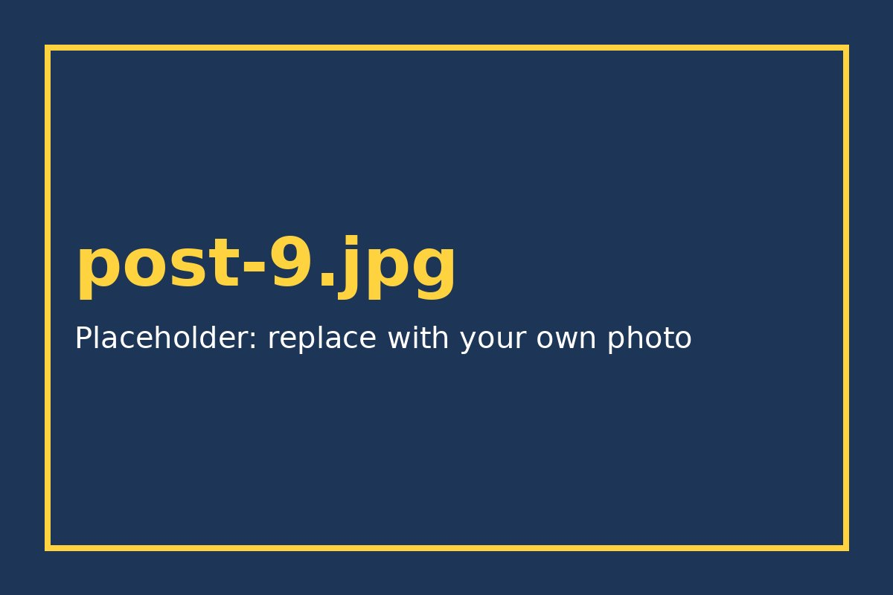

Home / Guides
How to Build a Capsule Wardrobe Under ₹3,000
A capsule wardrobe is a small set of clothes that all work together. Thrifting makes it affordable. The prices below are rough targets, not fixed rules.

Pick a colour base
Choose two neutrals, such as black and white or navy and grey, and one accent colour. Everything you buy should go with at least two other pieces.
A sample list of 12 pieces
- 2 plain tees
- 1 white shirt
- 1 knit sweater or vest
- 2 pairs of trousers or jeans
- 1 denim or light jacket
- 1 blazer or overshirt
- 1 skirt or shorts
- 1 pair of sneakers
- 1 accessory, such as a belt or bag
Set a budget per category
Spend more on shoes and outerwear, which are used daily, and less on tees. Track your spending in a notes app as you go.
Buy over several weeks
Do not try to buy everything on one trip. Slow shopping gives you time to notice what you actually reach for.